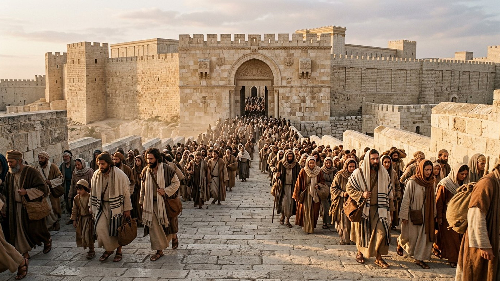
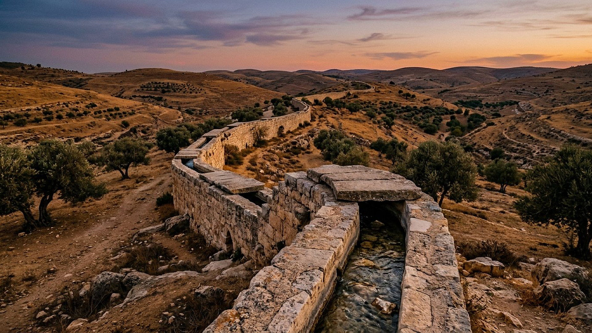

Les bains des pèlerins : la dernière étape avant le temple
En septembre 2026, au pied du mont du Temple, des fouilles ont mis au jour le lieu où les foules se purifiaient avant de monter adorer.
Reconstitution numérique — un bain rituel voûté, conservé du sol au plafond.
Une découverte annoncée à l'automne 2026
À l'Ophel, la pente qui descend du mont du Temple vers la Cité de David, l'équipe de l'Université hébraïque de Jérusalem a dégagé, après cinq saisons de fouilles, un complexe d'environ 280 m² : trois grands bains rituels (en hébreu, des mikvaot), un bassin central enduit d'environ 12 mètres sur 9,5, une place pavée et un réseau d'eau relié à la vallée du Cédron, tout près de la Triple Porte, l'une des entrées principales du temple. L'un des bains est conservé sur 4,2 mètres de haut, voûte de Pierre comprise : à Jérusalem, une structure du Second Temple intacte du sol au plafond est rarissime. FAIT ARCHÉOLOGIQUE
À quoi servaient ces bains ? Avant de pénétrer dans les cours du temple, le pèlerin descendait dans l'eau et s'immergeait entièrement : c'est la purification rituelle exigée par la Loi (Lévitique 15). Aux fêtes de pèlerinage, Jérusalem accueillait des foules immenses ; ce complexe était l'une de leurs dernières étapes, à quelques dizaines de mètres des portes.

Reconstitution numérique — la montée des pèlerins vers les portes méridionales du temple.
Le parcours du pèlerin, en quatre étapes
Faites avancer le pèlerin, de la route à la cour du temple — puis jusqu'à l'été 70.
Étape 1 / 4
Zoom profond : le bain voûté
Zoomez dans la reconstitution et visitez ses détails, un par un — comme une visite guidée qui s'approche de la pièce.
Des bains pour des foules exigent de l'eau, beaucoup d'eau, en plein été, sur une colline. La réponse tenait en un ouvrage d'ingénierie : l'aqueduc inférieur, un conduit qui amenait par gravité l'eau des Piscines de Salomon, près de Bethléem, jusqu'au mont du Temple — environ 21 kilomètres de pente infime et régulière. En octobre 2026, un tronçon de 300 mètres en a été remis au jour. FAIT ARCHÉOLOGIQUE

Reconstitution numérique — le conduit inférieur, des Piscines de Salomon au mont du Temple.
Et la pratique débordait Jérusalem : toujours en septembre 2026, à Kiryat Gat, l'Autorité israélienne des antiquités a soulevé en un seul bloc de 25 tonnes un bain rituel du Second Temple pour le sauver d'un chantier. Avec ses vases de Pierre, il révèle un habitat juif jusque-là inconnu entre la Chephéla et le Néguev, abandonné à l'époque de la révolte de Bar Kokhba. Purifications, vases de Pierre « pour les purifications » (comparez Jean 2:6), bains publics ou domestiques : la fouille de 2026 dessine, objet par objet, le quotidien rituel que les textes décrivent.
Pourquoi cette salle dans un musée des prophéties ?
FAIT ARCHÉOLOGIQUE
Le décor, devenu pièce à conviction
Le complexe de l'Ophel s'achève dans la couche de destruction de l'été 70 : des dizaines de monnaies de la révolte juive y ont été retrouvées. Ce lieu de purification, plein de foules quelques mois plus tôt, est l'un des derniers témoins avant les portes du temple dont Jésus avait annoncé qu'il ne resterait « pas Pierre sur Pierre » (salle 11). L'archéologie ne commente pas la prophétie ; elle en documente le décor, puis la fin.
DÉBATTU
Ce que la fouille ne dit pas
Ni les noms des pèlerins, ni combien ils étaient, ni si Jésus est passé par ce complexe précis : les fouilleurs parlent d'usage « très probable » par les pèlerins, et le musée reprend leur prudence. De même, un autre bain rituel, dégagé fin 2025 sous l'esplanade du Mur occidental et scellé sous les cendres de 70, attend encore sa publication complète avant d'entrer au registre.
Les pièces de la salle
FAIT ARCHÉOLOGIQUE
Le complexe de l'Ophel
Trois bains rituels, un bassin de 12 × 9,5 m, une place pavée, un bain voûté conservé sur 4,2 m — annonce de l'Université hébraïque de Jérusalem, septembre 2026 (n° d'inventaire non publié).
FAIT ARCHÉOLOGIQUE
Le bain de Kiryat Gat
Bain rituel du Second Temple, environ 4 m de large, extrait intact (25 tonnes) par l'Autorité israélienne des antiquités, septembre 2026 (n° d'inventaire non publié).
FAIT ARCHÉOLOGIQUE
L'aqueduc inférieur
Environ 21 km par gravité, des Piscines de Salomon au mont du Temple ; tronçon de 300 m remis au jour en octobre 2026 (n° d'inventaire non publié).
Bienvenue dans la salle des bains des pèlerins. À Jérusalem, au pied de l'ancien mont du Temple, des archéologues ont récemment dégagé un ensemble de bassins de Pierre vieux de deux mille ans. L'un d'eux, avec son escalier et sa voûte, est conservé presque entier. Dans cette salle, vous suivrez le parcours d'un visiteur de l'époque, de la place pavée jusqu'au bain, puis vers les grandes portes. Vous découvrirez aussi comment l'eau arrivait jusqu'ici, par un long conduit venu des collines du sud. Chaque étape s'appuie sur les résultats des fouilles publiés en 2026.